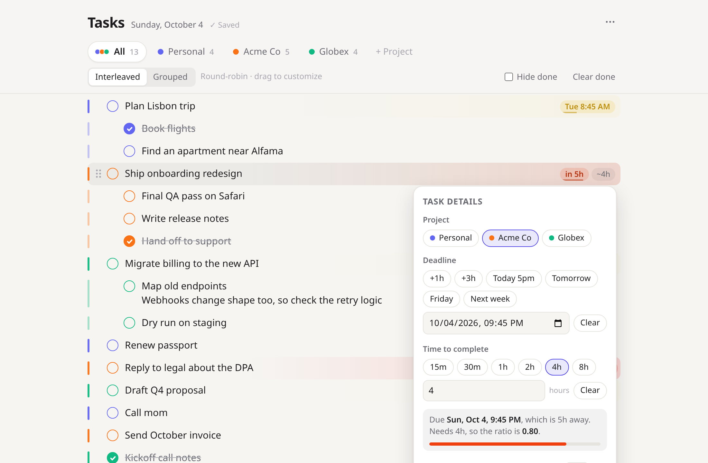
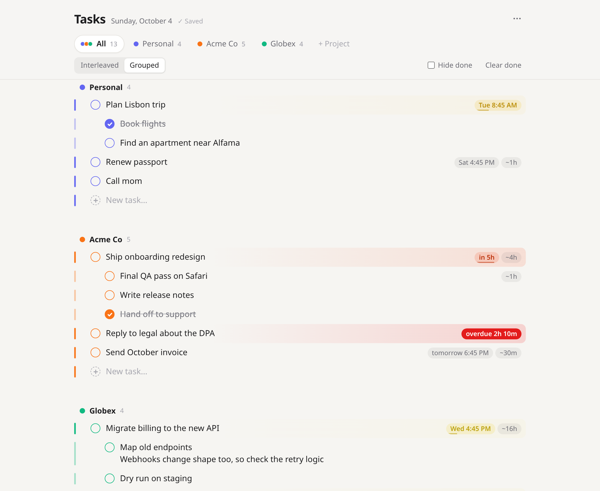
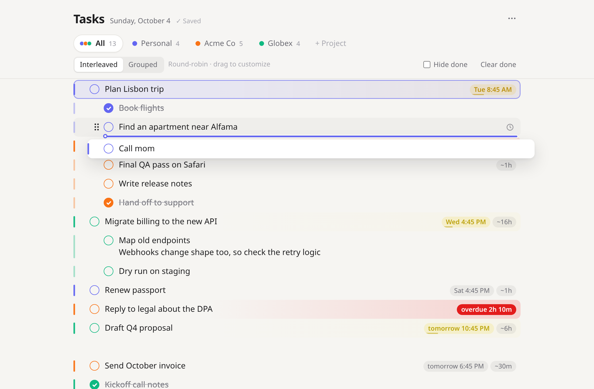
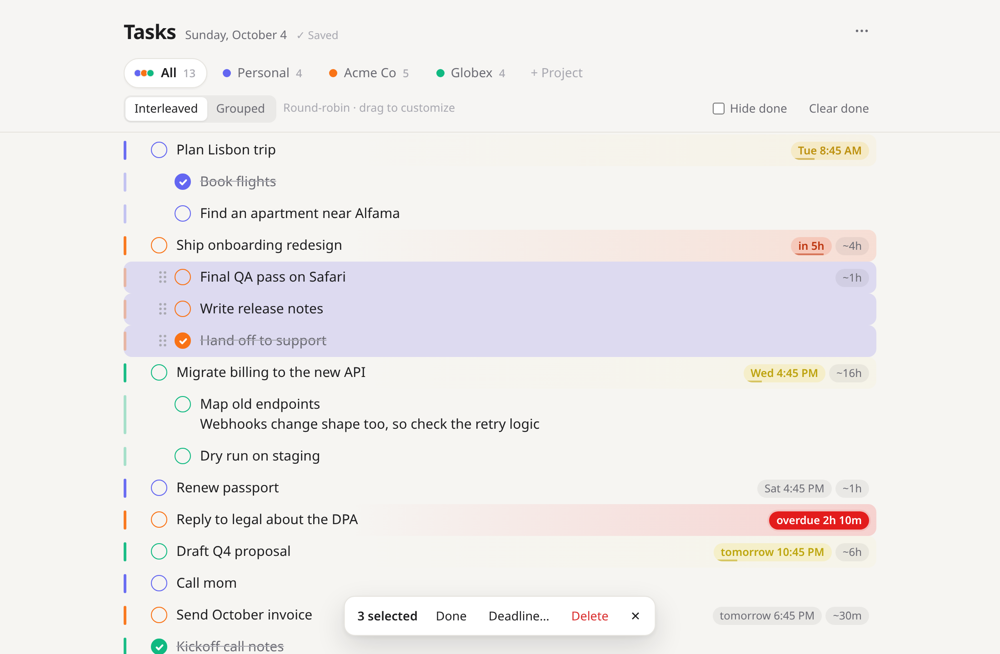
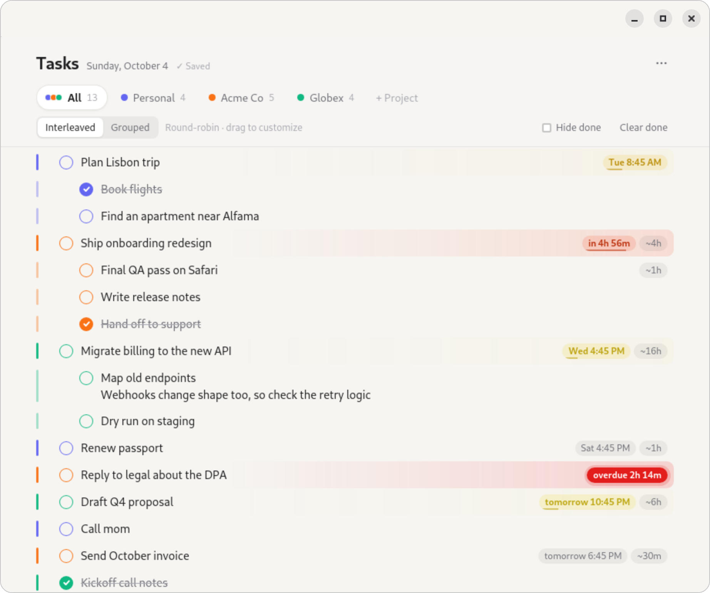
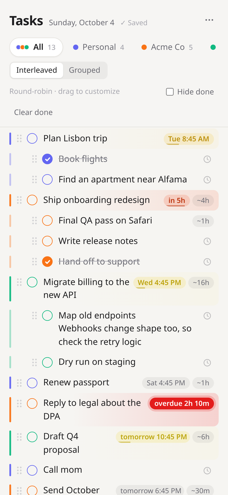

Urgency you can see from across the room.
Give a task a deadline and an estimate of how long it will take. Its color follows one number: the time it needs divided by the time you have left.
As that number approaches 1, the task warms from amber to red. Past the deadline, it pulses.

One list for every client, or one each.
Every project gets a color and its own tab. The All tab weaves them together round-robin, so no client gets buried. Drag anything in the woven list and that order sticks.
- Interleaved or grouped, switch any time
- Each project keeps its own priority order in both views
- Drop a task under another client's task to move it there
- Drag the project tabs to set which client comes first

Drag shows where it lands.
The dragged task snaps into its new spot as you move. Pull sideways to nest it, and the task that would become its parent lights up, so you can see the indent before you let go.

Select a few, act once.
Shift+↑/↓ past the edge of a task, or Shift+click, to select a run of tasks. Then delete, complete, indent, move, set a deadline or reassign the whole group in one go. Every delete can be undone.
- Ctrl+C copies them as an outline that pastes back as tasks
- Paste a bulleted list from anywhere and get nested tasks



Small things, done right.
Your data, in SQLite
Real tables in one file under your home folder. Easy to back up, query or move.
Keeps working offline
If the server is down, edits are kept locally and sync the moment it's back.
Two windows, no clobbering
Every save carries a revision, so a stale window catches up instead of overwriting.
Multi-line tasks
Shift+Enter adds notes inside a task. The arrow keys move line by line, then to the next task.
Light & dark
Follows your system theme, or pin it. The urgency colors are tuned for both.
Undo for the scary stuff
Deleting tasks, clearing done ones or removing a project all offer Undo.
Click in and start typing.
This is the real app. In the browser demo, tasks are saved only on this device.
Up and running in a minute.
Fedora desktop app
- Download the
.rpmfrom the latest release. - Install it:
sudo dnf install ./task-list-*.noarch.rpm
- Open Task List from Activities. From then on, it opens by itself when you log in.
Needs Fedora 41+ (Node 22, GTK 4, WebKitGTK). Your tasks live in ~/.local/share/task-list/tasks.db.
Anywhere with Node 22+
- Get the code:
git clone https://github.com/meelash/task-list cd task-list
- Start it (no dependencies to install):
npm start
- Open localhost:4321 in your browser.
Works on macOS, Windows and any Linux. Want a proper app there instead of a browser tab? Tell us.
Want it somewhere else?
Requests decide what gets built next. It takes about thirty seconds.
Another platform
A native app for your system, packaged and starting at login, like on Fedora today.
Cloud sync
The same list on your laptop and phone, kept in sync. Self-hosted, hosted, or shared with a team.
Something else in mind? Open an issue.